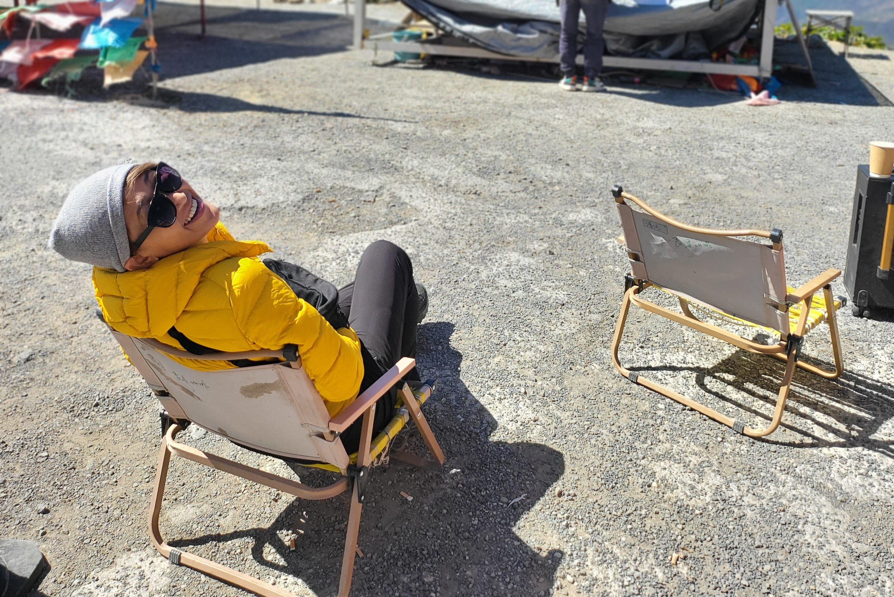

where to next?
วางแผนทริป
จากเรื่องจริง
ของคนที่ไปมาแล้ว
วางแผนรายวัน + งบ ในที่เดียว
ก็อปทริปจริงไปใช้ได้ทันที
บันทึกระหว่างเที่ยว เป็นเรื่องเล่าของคุณ
มีบัญชีอยู่แล้ว? เข้าสู่ระบบ
{{ nowKicker }}
{{ nowTitle }}
{{ nowSub }}
ทริปหน้าไปไหน?
เริ่มวางแผนทริปใหม่ หรือก็อปทริปจริงของคนอื่นมาปรับก็ได้
แผนของฉัน
โปรแกรมทัวร์
คาซัคสถาน · 11 วัน
โหลดจากตั๋ว+ทัวร์ · 24 ก.ค.–3 ส.ค. · Jeep ส่วนตัว
เที่ยวเองหรือไปกับทัวร์ ก็บันทึกได้เหมือนกัน
วางแผนเอง
เริ่มจากหน้าว่าง เติมทีละวัน
ก็อปทริปจริง
เอาแผนของคนที่ไปมาแล้วมาปรับ
โหลดโปรแกรมทัวร์
วางลิงก์ / PDF / ถ่ายรูป → AI แปลงให้
ตั้งชื่อทริป
20–27 ม.ค.
2 คน
{{ tripTitle }}
ตั๋ว & เอกสาร
ตั๋วเครื่องบิน · โปรแกรมทัวร์ · ที่พัก
{{ cur.tag }}
{{ cur.city }}
{{ cur.summary }}
บันทึกเรื่องวันนี้
เก็บรูป คลิป โน้ต ระหว่างเที่ยว → กลายเป็นเรื่องเล่า
{{ s.t }}
{{ s.kind }}
{{ s.title }}
{{ s.note }}
แก้ไขลบ
{{ cur.stayName }}
{{ cur.stayMeta }}
ถ่ายรูปหรือเลือกภาพ แล้วถาม AI ได้เลยระหว่างทาง
ถ่ายใหม่เลือกรูป
ที่นี่คือที่ไหน มีอะไรน่าสนใจ?
ป้ายนี้เขียนว่าอะไรเมนูนี้กินยังไงประวัติที่นี่
AI ตอบ
ดูจากภาพ น่าจะเป็นย่านเมืองเก่าบนเนินที่มีจุดชมวิวเมืองด้านล่าง — ช่วงที่สวยที่สุดคือตอนเย็นแดดอุ่นๆ รอบๆ มักมีคาเฟ่และร้านของฝากงานฝีมือ แนะนำเช็กเวลาปิดของจุดชมวิวก่อนขึ้นไป
ข้อมูลจาก AI · โปรดตรวจสอบอีกครั้งก่อนใช้จริง
เพิ่มกิจกรรมลงวันที่เลือกไว้
เลือกหมวด
ชื่อกิจกรรม
ช่วงเวลา
โน้ต (ถ้ามี)
{{ affilLabel }}
{{ affilSub }}
จองผ่านลิงก์นี้ nimjourney อาจได้ค่าแนะนำเล็กน้อย โดยคุณไม่จ่ายเพิ่ม
เส้นทาง 11 วัน · เริ่ม-จบที่อัลมาตี
แผนที่ตัวอย่าง · เชื่อม Mapbox ตอน deploy จริง (ปักหมุด+ระยะทางจริง)
{{ d.n }}
{{ d.date }}
{{ d.city }}
วางแผนไว้
฿70,300
จ่ายจริง
฿67,850
ประหยัดกว่าแผน ฿2,450
{{ b.label }}{{ b.plan }} / {{ b.actual }}
วางแผนจ่ายจริง
พรีเมียม
บอกงบกับสไตล์ เดี๋ยว AI ร่างทั้งวันให้
วัน
วันที่ 4
งบวันนี้
฿3,000
สายชิลคาเฟ่ไม่เดินเยอะ
AI ร่างวันที่ 4 ให้แล้ว
{{ a.title }}
{{ a.note }}
รวมประมาณ฿2,870 อยู่ในงบ
A nimjourney book
ยามากาตะ
หิมะกับออนเซ็น
หิมะกับออนเซ็น
โดย Nim · 8 วัน
สารบัญ — ประกอบจากบันทึกอัตโนมัติ
1ถึงโตเกียว2 รูป
3วันที่เจอสโนว์มอนสเตอร์4 รูป
5หมู่บ้านในฝันชื่อ Ginzan4 รูป · คลิป

ยามากาตะ · หน้าหนาว 2024
8
วัน
5
เมือง
6
ออนเซ็น
คลิปไดอารี่ — แปะลิงก์ + แคปชันสั้น
วันที่ 3 · Zao
กระเช้าขึ้นไปเจอสโนว์มอนสเตอร์เต็มเขา
ยอดนิยมล่าสุดกำลังตาม
Nim· {{ st.place }}
{{ st.title }}
{{ st.excerpt }}
{{ st.likes }}{{ st.qa }}
ยังไม่มีเรื่องเล่า
เริ่มบันทึกระหว่างทริป แล้วเรื่องของคุณจะมาอยู่ที่นี่
Ginzan Onsen · ญี่ปุ่น
ติดตาม
คืนที่ Ginzan เหมือนหลุดเข้าการ์ตูน
Nim
มกราคม 2024 · อ่าน 3 นาที
พอฟ้ามืด ไฟแก๊สริมลำธารก็ค่อยๆ ติดทีละดวง ตึกไม้เก่าสามชั้นสะท้อนแสงส้มลงบนหิมะ เราเดินช้าๆ มือถือถ้วยชาอุ่นๆ รู้สึกเหมือนหลุดเข้าไปในหนังแอนิเมชันสักเรื่อง

ดูคลิปบน YouTube
342
เรื่องนี้มาจากทริปจริง
ยามากาตะ 8 วัน · มีแผนเต็ม
คืนที่ Ginzan เหมือนหลุดเข้าการ์ตูน
Nim · ญี่ปุ่น
เจ้าของปักหมุด
Ploy · 2 วันก่อน
ที่พัก Hatago Itouya จองยากไหมคะ ไปกลางมกราต้องจองล่วงหน้ากี่เดือน?
Nim ผู้เขียน
จองล่วงหน้า 3 เดือนกำลังดีค่ะ ห้องริมลำธารเต็มไว เปิดจองใน booking กับเว็บเรียวกังโดยตรง
Beam · 1 วันก่อน
หนาวมากไหมคะ ต้องเตรียมเสื้อกันหนาวประมาณกี่องศา
ถามอะไรก็ได้เกี่ยวกับทริปนี้…
AirAsia
Bangkok ⇄ Almaty · e-ticket
ขาไป · ศ. 24 ก.ค. 2569
19:30
DMK · กรุงเทพ
6 ชม. 40 น. · บินตรง
00:10+1
ALA · อัลมาตี
ขากลับ · จ. 3 ส.ค. 2569
01:30
ALA · อัลมาตี
6 ชม. 45 น. · บินตรง
10:15
DMK · กรุงเทพ
ผู้โดยสาร
Nim
เปิดไฟล์ตั๋วจริง (PDF)
ตั๋วต้นฉบับที่คุณอัปโหลดไว้ · เปิดดูเวลา-ที่นั่งได้เต็มๆ
เก็บตั๋ว-เอกสารไว้ที่เดียว เปิดดูได้แม้ไม่มีเน็ตระหว่างเดินทาง
ตั๋วเครื่องบิน AirAsia
กรุงเทพ ⇄ อัลมาตี · PDF
โปรแกรมทัวร์ 8 วัน
Private Jeep Tour · PDF
ที่พัก / โรงแรม
Yurt camp, Glamping, Rancho…
กำลังเที่ยว · {{ cur.tag }}
เล่าเรื่องวันนี้… เก็บความรู้สึกและสิ่งที่เจอระหว่างเที่ยว
รูปในตอนนี้0 / 4
เพิ่มรูป
เพิ่มรูป
เพิ่มรูป
เพิ่มรูป
เลือกรูปปกของตอนนี้
คลิป YouTube (1 ต่อตอน)
แปะลิงก์ YouTube
แชร์เป็นสาธารณะ
คนอื่นอ่านได้ · กดถูกใจ · ขึ้นแท็กสถานที่
ค้นเมือง/สถานที่ เช่น ญี่ปุ่น, Ginzan…
ยังไม่มีทริปให้สำรวจ
เมื่อคุณหรือคนอื่นแชร์ทริปเป็นสาธารณะ
จะมาโผล่ให้ค้นที่นี่
จะมาโผล่ให้ค้นที่นี่
Nim
@nimjourney · เที่ยวเองทั่วโลก เล่าเรื่องจริง
1 ทริป
0 เรื่องเล่า
0 ผู้ติดตาม
ผู้ช่วย AI ของฉัน
{{ aiStatus }}
ใช้ AI ด้วยโควตาบัญชีตัวเอง ไม่กินโควตาแอป · เก็บ key แบบเข้ารหัส
{{ aiMasked }}
คาซัคสถาน
คาซัคสถาน · 11 วัน
ยังไม่มีเรื่องเล่า
บันทึกจากทริปของคุณได้เลย
บันทึกจากทริปของคุณได้เลย
{{ st.place }}
{{ st.title }}
{{ st.likes }}{{ st.qa }}
ยังไม่มีหนังสือ
ทำสรุปทริปเป็นหนังสือได้จากหน้าทริป
ทำสรุปทริปเป็นหนังสือได้จากหน้าทริป
รีแคป/คลิปไดอารี่จะมาอยู่ที่นี่
แต่ละทริปทำคลิปสรุปได้ 1 ชิ้น
สร้างจากปุ่ม "สรุปทริป → รีแคป" ในหน้าทริป
สร้างจากปุ่ม "สรุปทริป → รีแคป" ในหน้าทริป